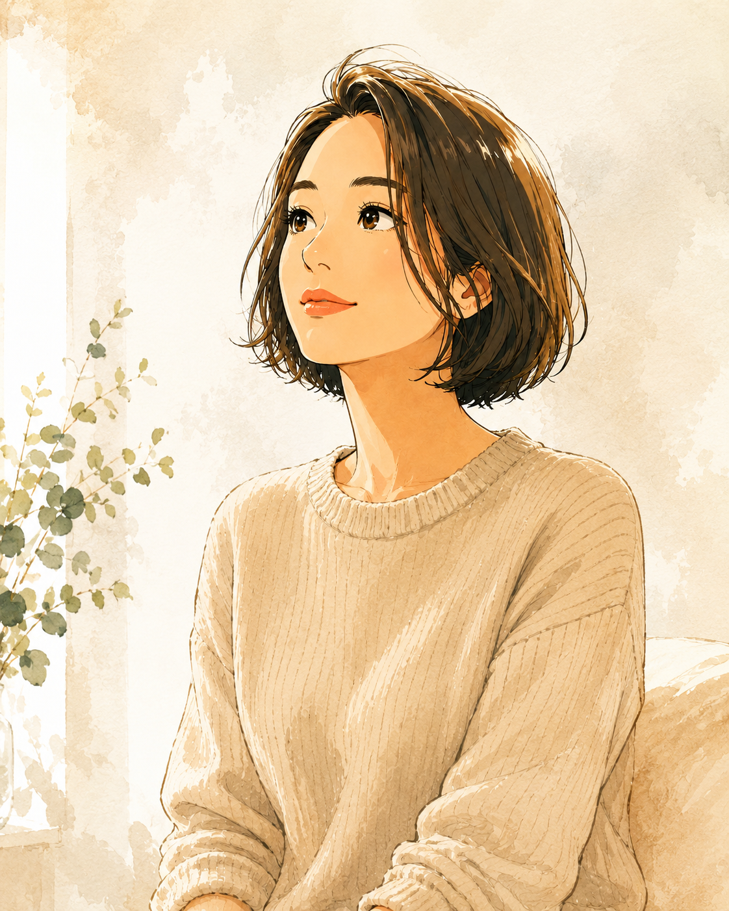

ママとして。妻として。誰かのために動いているうちに、
「私はどうしたい？」が、分からなくなっていませんか。
ここは、正しい答えを教えてもらう場所ではありません。
言葉にならない気持ちを一緒に見つけて、周りの声ではなく、
「私は、こうしたい」を自分で選べるところまで戻るための個別対話です。
ここは、きれいに整理してから来る場所ではありません。
「好きだけど苦しい」
「断りたいけど嫌われたくない」
「家族も大事。でも私の人生も大事」
そんな、矛盾したままの気持ちを持ってきてください。
生きていれば、また迷います。
でもそのたびに誰かの正解へ走るのではなく、
「私は今、どう感じてる？」と自分に戻れる。
その感覚を持てることを、大切にしています。
もっと頑張る。もっと学ぶ。もっといいママになる。その前に、「今の私は、どう感じている？」を見ます。
すぐに答えを出さなくてもいい。迷うことも、止まることも、自分を知る途中かもしれないから。
「こう言った方が正しい」ではなく、「本当はこう思っている」を置ける場所にします。
対話の最後に、必ず大きな決断をする必要はありません。
でも、「次に何をする？」までは一緒に確認します。
大きく人生を変えるのではなく、
今の自分ができる、小さな一歩を選ぶ。
私の対話では、体感学®︎を土台にしています。
「どう考えるべきか」だけではなく、
その言葉を口にしたとき、体はどう感じている？
胸がざわつく。お腹が重い。なぜか言葉が止まる。
そんな感覚の中に、まだ言葉になっていない気持ちがあることがあります。
頭では「これでいい」と思っている。
でも、なぜか苦しい。
その「なぜか」を、思考だけで片づけず、
感覚も一緒に見ていきます。

ママとして。妻として。誰かを優先するうちに、私自身も何度も、 「私はどうしたいんだろう」が分からなくなってきました。
正しさを探したり、人の気持ちを考えすぎたり、ちゃんとしようとしたり。
だから私は、あなたに答えを教える人ではなく、 まだ言葉になっていない気持ちを一緒に見つけて、あなた自身が「私はこうしたい」と選べるところまで隣にいる人 でありたいと思っています。
体感学®︎認定インストラクター。
足さない。急がない。装わない。
私だもの。
今のあなたに合う入口から、しょうこの言葉に触れてみてください。
「夫にモヤモヤする」
「仕事を続けるか迷っている」
「本当は断りたい」
「なんとなくしんどい」
それだけで十分です。
まとまっていないところから始める対話です。
オンライン／1対1／事前準備なし
料金：現在の募集価格をここに記載
※APPLICATION_URLを申込フォーム・予約ページ等のURLへ差し替えてください。
まとまっていなくて大丈夫です。その「まとまらなさ」から一緒に見ていくのが、この対話です。
特定の型に当てはめて答えを導くより、今のあなたの感覚と言葉を丁寧に拾い、自分で選べる状態へ整理することを大切にしています。
もちろんです。「なんとなくモヤモヤする」「誰かに話して整理したい」という段階でもご利用いただけます。
すぐに答えが出なくてもいい。きれいに話せなくてもいい。
でも、「私は本当はどうしたい？」を置き去りにしたまま進まなくていい。
ママの前に、私。
私だもの。